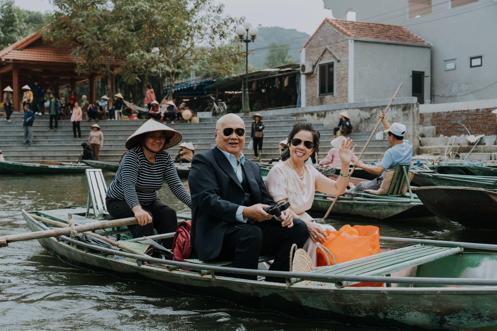
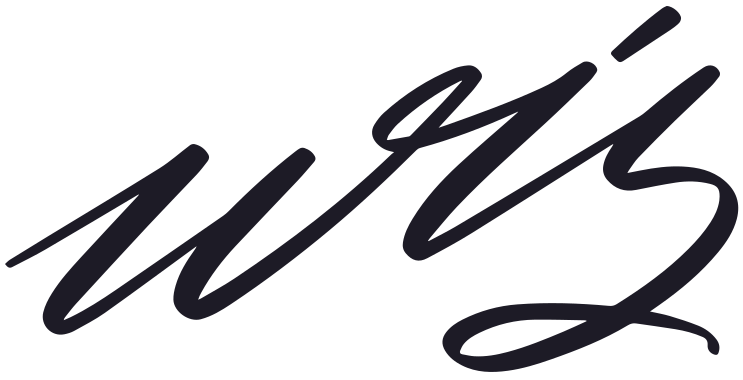
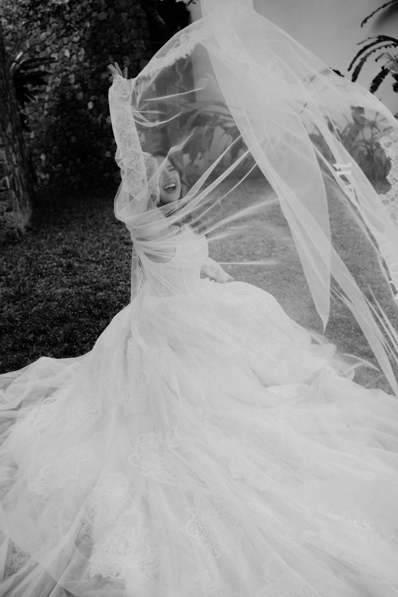
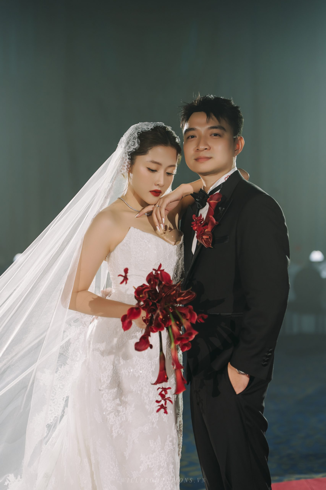
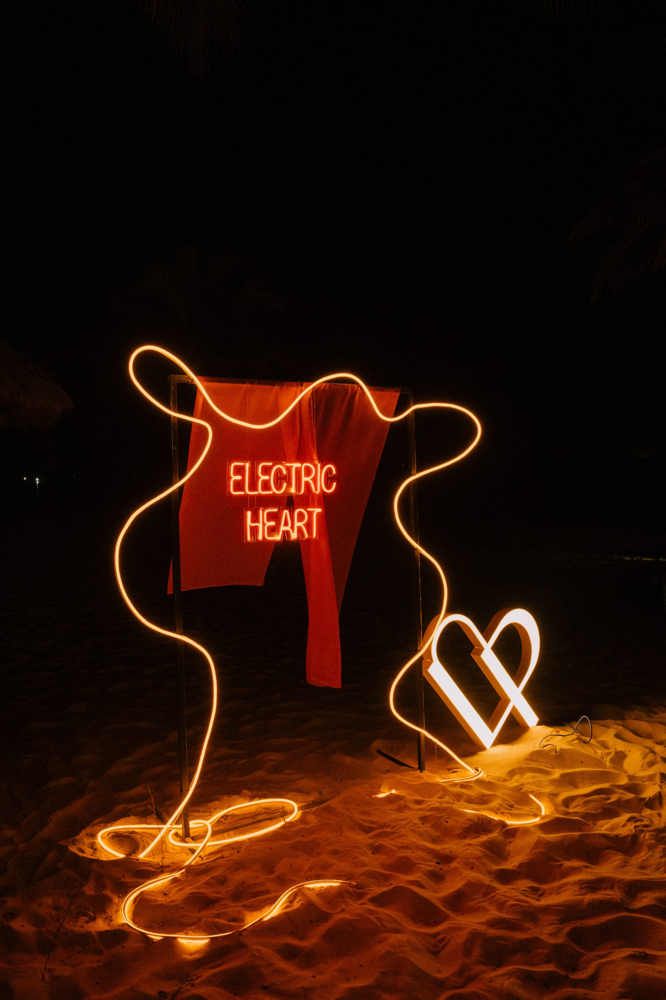
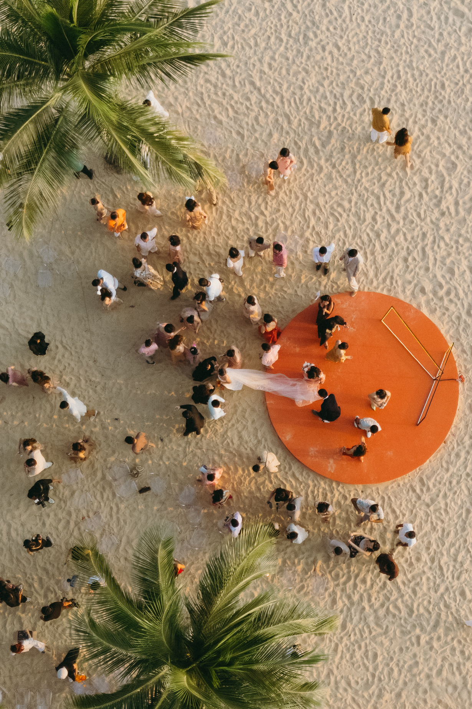

Catherine &
Johnny
Ninh Binh, Vietnam
It began with a cup of milk tea, then found its place on the water.

Read the story
MenuA selection of celebrations, read from the life that came before them.
These are not themes applied to a day. Each begins with a place, a habit, a shared reference or a feeling that belongs only to the people in it.

Each folio holds a different way of gathering. Read the completed story where it is available; the remaining archive is being prepared with the same care.
Ninh Binh, Vietnam
It began with a cup of milk tea, then found its place on the water.

Read the storyHanoi, Vietnam

Phu Quoc, Vietnam

Sa Pa, Vietnam
